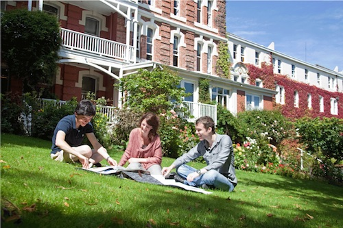

<div class="row">
<div class="col-md-9">

<div class="page-header">
<h2>Accommodation</h2>
</div>

<p>Accommodation needs to be booked separately from the ANZSUP registration. It is highly recommended that ANZSUP participants stay at St. Margaret's college and follow the booking procedure below.</p>

<h3 id="stmargarets">St. Margaret's College</h3>

<h4><i>333 Leith Street, North Dunedin</i></h4>

<p></p>

<p>Accommodation has been arranged at St Margaret’s College, a 5 minute walk from Science III
Building where the School will be held.</p>

<p>Accommodation will be a single room with all linen and towels provided. Breakfast, lunch and dinner are all provided at St Margaret’s College with morning and afternoon tea available in the Science III Building.</p>

<p>Facilities are shared; however each bathroom is private at the time of use and contains a shower, hand basin and toilet behind the locked door. Each floor has a fully equipped kitchen for making snacks, as well as tea and coffee (which is provided).</p>

</div>
</div>
